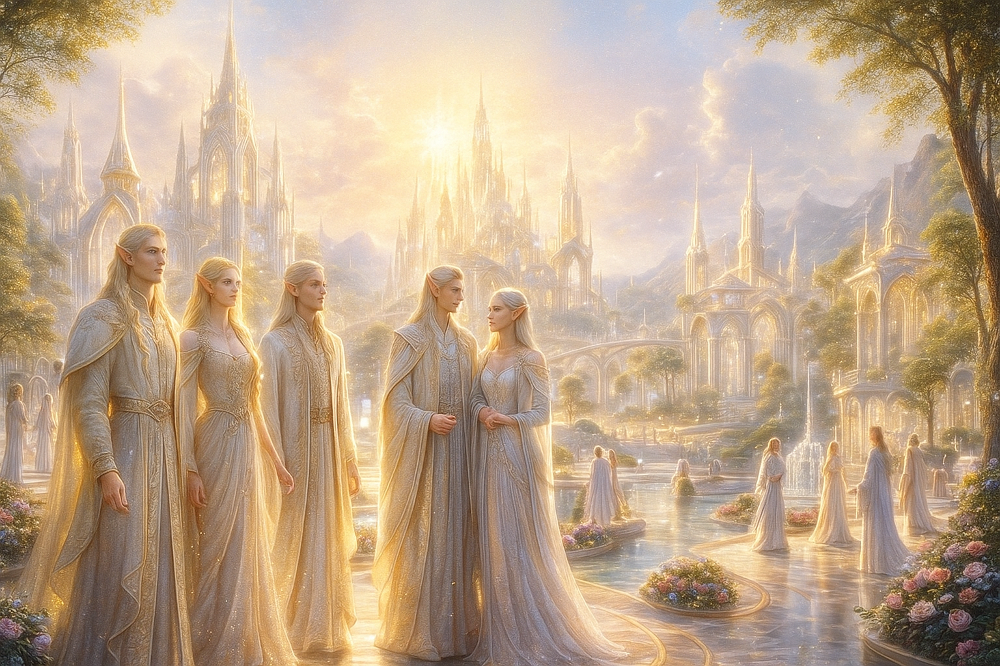
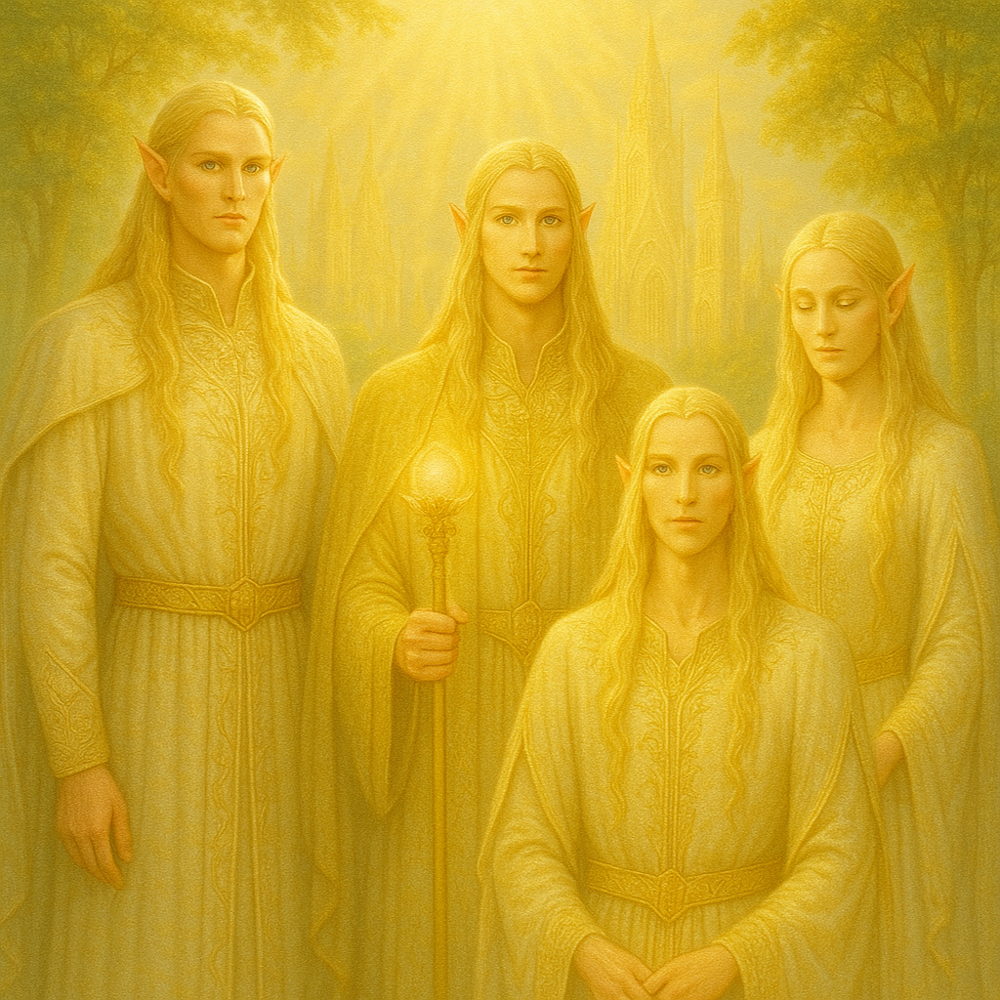
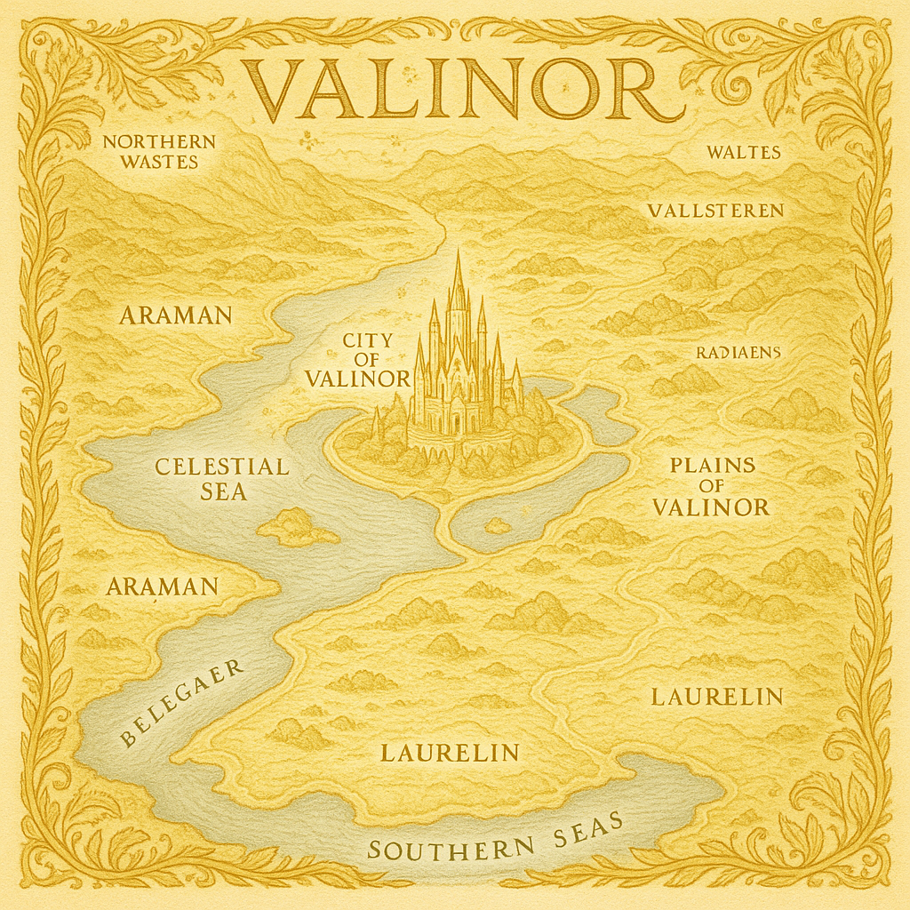
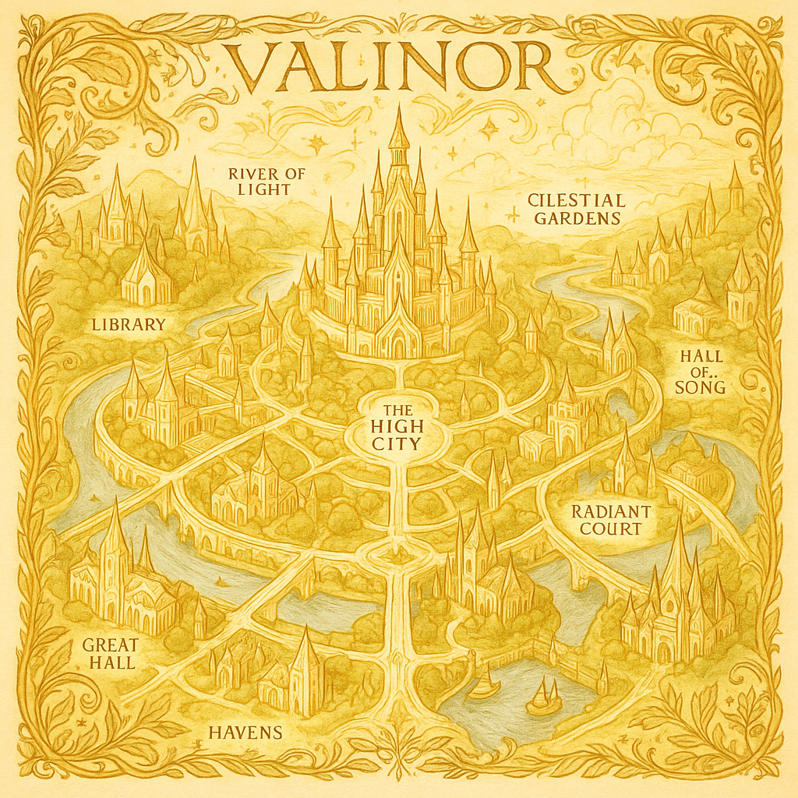
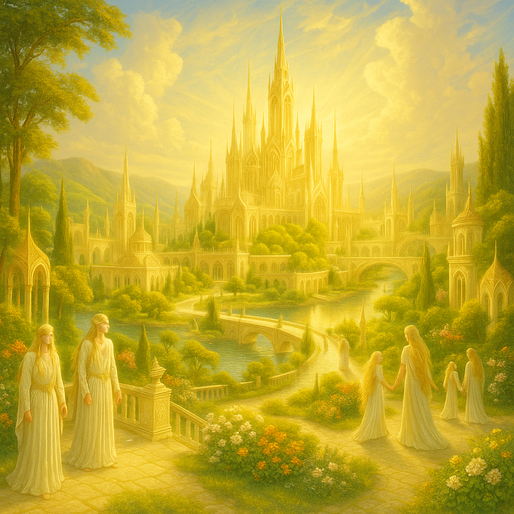
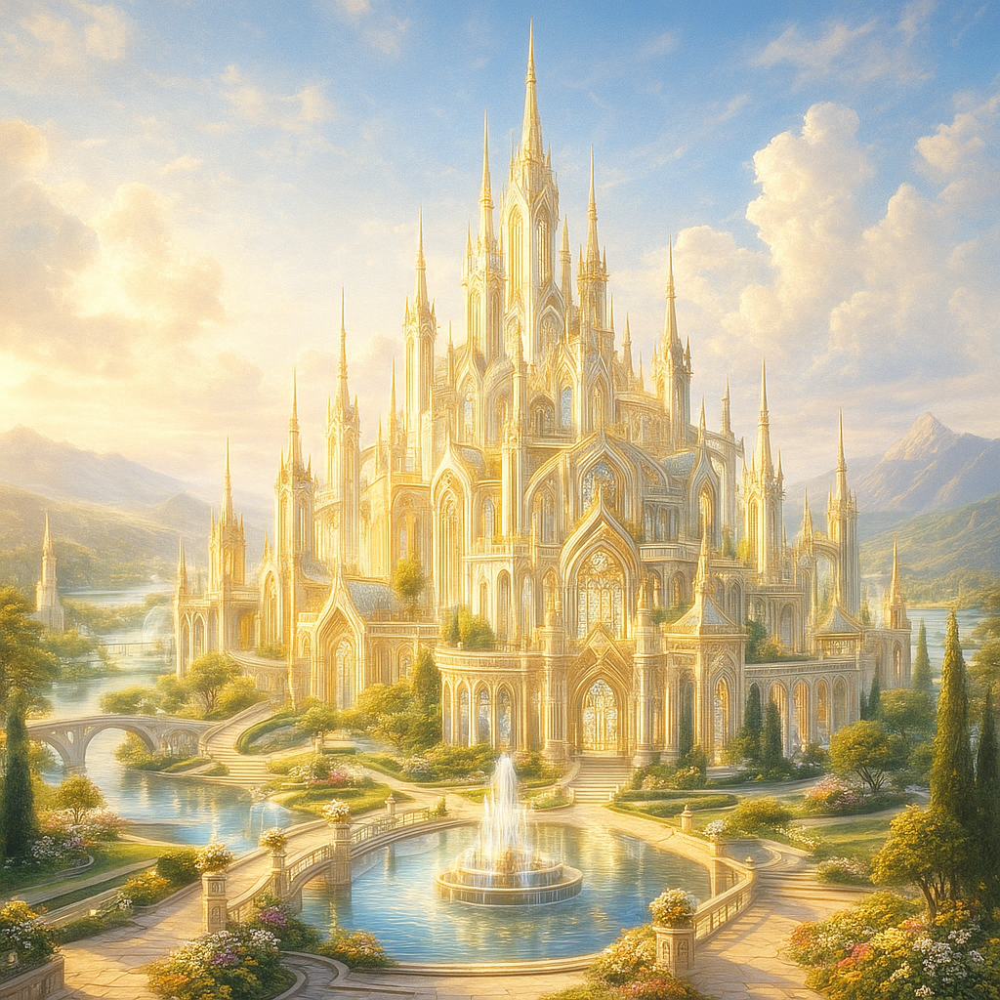

Valinor, tierra de los inmortales y hogar de los elfos más puros
Población


In Valinor, light does more than illuminate: it whispers. The people of the blessed realm move among golden veils that conceal ancient truths, and their gazes, serene yet unfathomable, seem to pierce the soul of all who behold them. Every gesture, every word, carries the echo of ages no mortal remembers. In this land where light never dies, the inhabitants of Valinor guard secrets as old as creation itself… and reveal only what destiny allows to be seen.
Among the eternal radiance of Valinor, its inhabitants move like figures shaped from ancient light, wrapped in silences that seem to hold echoes of an unreachable age. Their gazes, gentle yet unfathomable, reveal a wisdom no mortal could ever fully comprehend.
Mapa


Exploring the city of Valinor is to enter a labyrinth of living light, where the paths seem drawn by invisible hands and the rivers shimmer with reflections that do not belong to the mortal world. The golden towers of the High City rise like divine beacons, concealing ancestral secrets behind their flawless radiance.
The realm of Valinor unfolds like a golden tapestry woven by divine hands, yet beneath its perfect radiance pulse secrets few can grasp. The plains shimmer with a light that does not come from the sun, and the Celestial Sea murmurs ancient melodies that seem to call out to those who venture too near. Araman, vast and silent, hides paths that reveal themselves only to the worthy, while in Laurelin the land vibrates with echoes of primordial light.
Ciudad


The city of Valinor rises like a horizon of impossible light, where golden towers seem to emerge more from a dream than from stone. Its bridges cross waters so still they reflect skies that do not belong to this world, and the gardens, eternally in bloom, conceal paths that sometimes exist… and sometimes do not.
The castle of Valinor shines as though forged from the very light of dawn, yet beneath its golden radiance one can sense something deeper and far more ancient. Its towers, rising like prayers toward the eternal sky, seem to thrum with a silent murmur no mortal has ever been able to decipher.